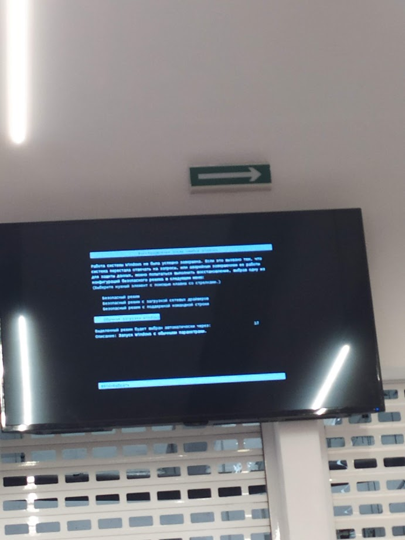

So, Windows. I have so much memories from using it, from Windows XP up to Windows 11, and yet, the only positive ones are before Windows 10 (excluding LTSC)
Why? Cause when I started using Windows 10 for Home, it was some sort of ritual to start out fresh every year, since, either the kernel would blow itself up, or drivers would combust and stop working after another Windows update.

This is a photo from February of 2022, and it's PC at MVS's Service Centre just crashing at start-up, and at that time, we had to wait until they've opened completely, for the screens to work (as they had to manually do everyting)
And this is my point, everything outside of Windows LTSC is really unreliable, at least, in my experience.
While Linux seems like this stronghold, where it's pretty stable.
And don't get me wrong, Linux also has its fair share of hiccups, like some operations being able to complete only through terminal, or some driver hiccup, where it costs your quality of audio and etc, but, if you're good in tech, you'll fix it easily, as there's lots of guides online about fixing some problems with Linux.